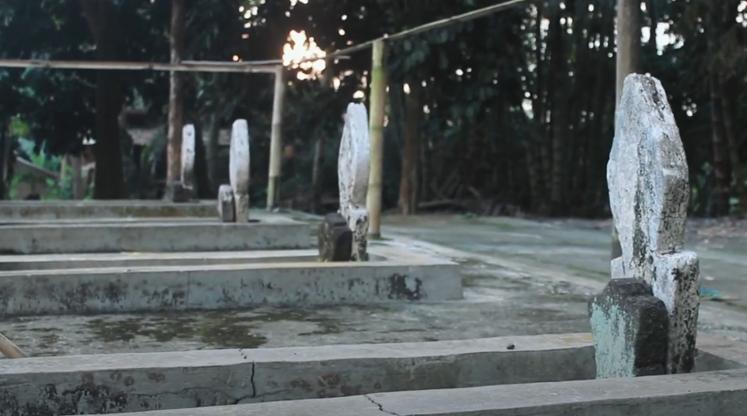

Dusun Geneng 1 memiliki akar sejarah yang kuat dari para leluhur yang pertama kali membuka dan menetap di wilayah ini. Tokoh sentral dalam cikal bakal berdirinya dusun ini adalah Mbah Kyai Geneng dan Nyai, serta Mbah Kyai Gentho dan Nyai, yang dikenal sebagai sesepuh dan pelopor kehidupan masyarakat di Geneng. Melalui perjuangan dan kebijaksanaan mereka, dusun ini tumbuh menjadi sebuah komunitas yang rukun dan berkembang. Nilai-nilai luhur yang diwariskan para pendiri masih dijaga dan dilestarikan oleh warga hingga kini, menjadikan Dusun Geneng 1 sebagai salah satu dusun yang memiliki kekayaan sejarah dan budaya di wilayahnya.
